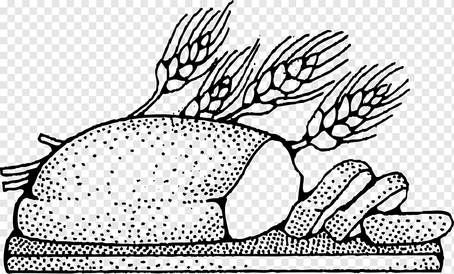

Products in our bakery are prepared exclusively from natural products
Famous Jenny`s Bakery
At Jenny`s bakery we use forgotten technologies of natural baking. We bake bread with sourdough cultures of our own production. We use only natural raw materials from local farmers, which not only gives a great taste to baked goods, but also provides 100% of the benefits of a healthy product.
 Handmade baked goods